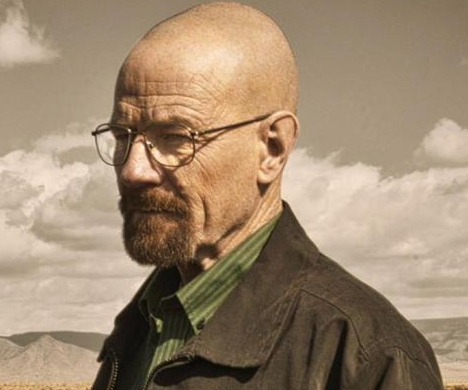
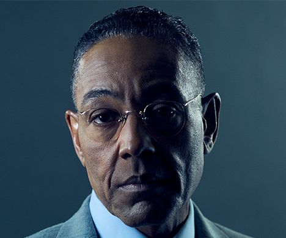
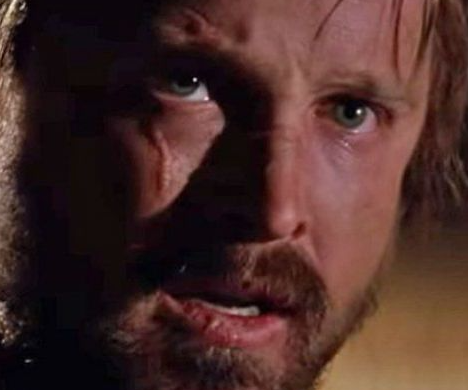

-

Walter White:
Walter era um químico promissor e um dos fundadores da bilionária empresa Gray Matter Technologies, porém logo saiu dela, vendendo suas partes nas ações por US$ 5 mil por razões pessoais, tornando-se um professor de química infeliz e desiludido. Após ser diagnosticado com câncer pulmonar nível 3, resolve fabricar metanfetamina para garantir a segurança financeira de sua família após sua morte. Desesperado com o fato que sua família irá passar necessidades após sua morte, decide que fará qualquer coisa para que não sofram com isso. Impulsionado pelo desejo, adrenalina e medo de não oferecer dignidade a sua família, aproveita de suas habilidades e conhecimentos em química, a favor do crime. Com o decorrer da série, Walter gradualmente se torna sombrio e mais perverso, sofrendo uma significativa mudança psicológica em relação ao começo da série.
-

Gustavo Fring:
Ele é um empresário chileno-americano e importante distribuidor de narcóticos no sudoeste dos Estados Unidos que usa vários negócios legítimos, incluindo uma cadeia de restaurantes de fast food de sucesso chamada Los Pollos Hermanos.(The Chicken Brothers) e uma lavanderia industrial chamada Lavandería Brillante (Bright Laundry), como fachadas usadas para lavar dinheiro para uma vasta operação de drogas. Embora exteriormente ele trabalhe com o cartel mexicano para distribuir cocaína, ele secretamente planeja vingança contra seus membros pela morte de seu sócio e parceiro romântico Maximino "Max" Arciniega nas mãos de Hector Salamanca , o patriarca do tráfico de drogas apoiado pelo cartel. no sudoeste. Para se tornar independente da cocaína do cartel, ele constrói um laboratório secreto sob uma lavanderia industrial para fabricar metanfetamina.
-

Jesse Pinkman:
Ele é um cozinheiro de metanfetamina de cristal e trabalha com seu ex-professor de química do ensino médio, Walter White (Bryan Cranston) em uma operação de metanfetamina. Jesse é o único personagem além de Walt a aparecer em cada episódio do show. O personagem recebeu elogios tanto de críticos como de fãs. Paul também recebeu aclamação universal por sua atuação. Para o seu retrato, Paul ganhou o Prêmio Emmy Primetime por ator de apoio excepcional em uma série de dramas em 2010, 2012 e 2014 - o que o torna o único ator a ganhar a categoria três vezes, desde sua separação em drama e comédia. De volta, quando as categorias foram combinadas, Art Carney e Don Knotts ganharam três também, o que liga Paul para a maioria das vitórias na história do prêmio. Jesse é bem conhecido por seu uso liberal das palavras " yo" e "bitch".